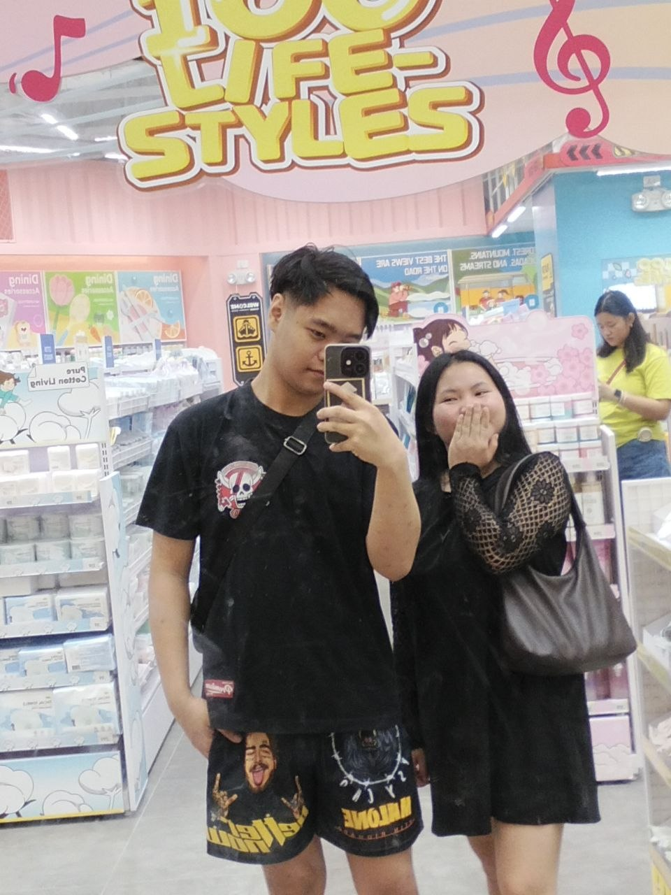
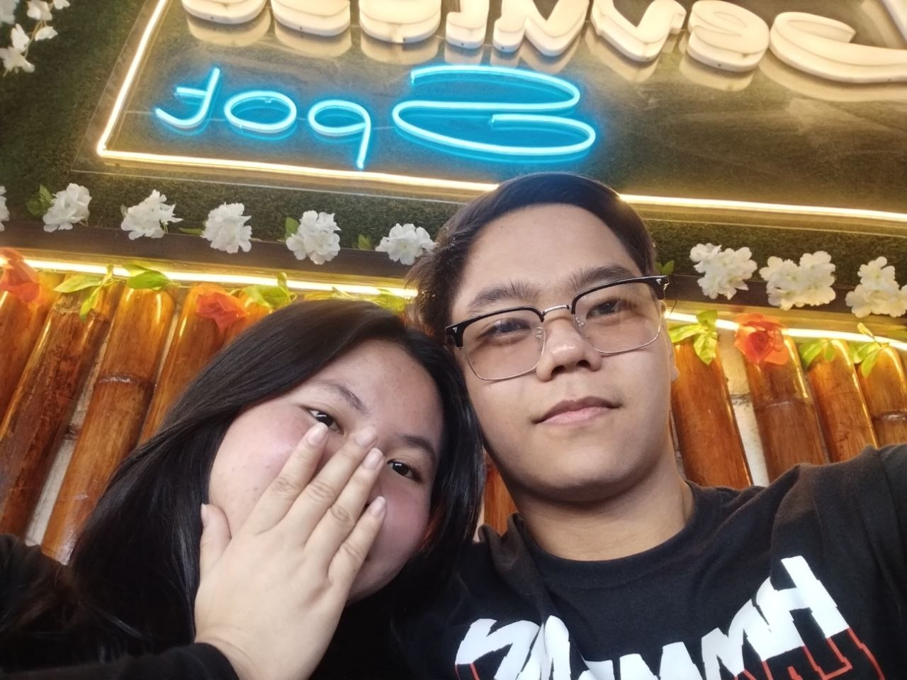
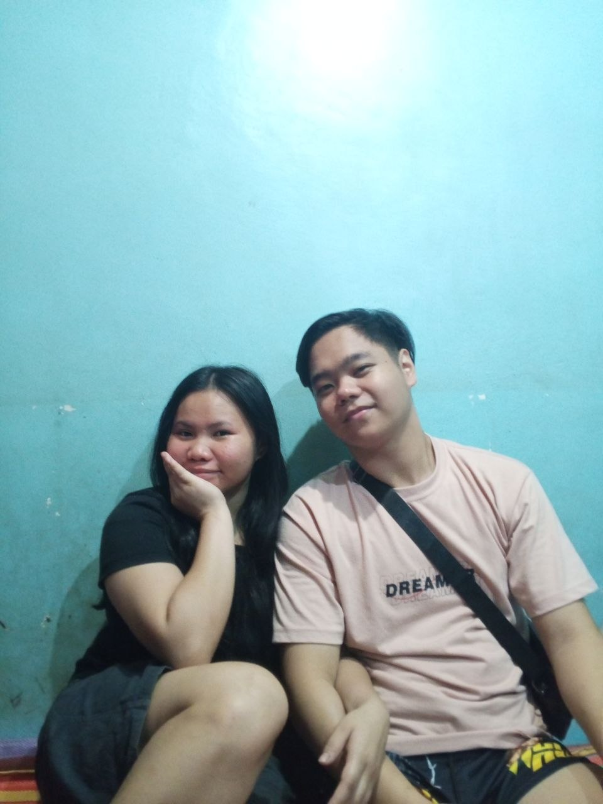
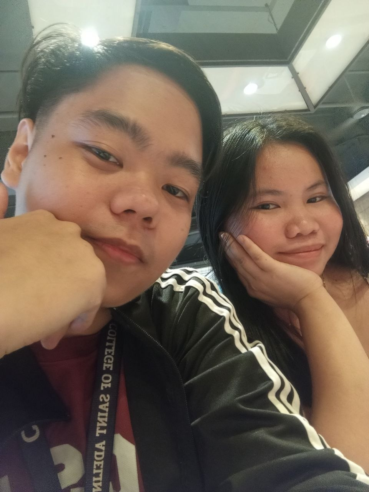

It hasn’t been that long, but somehow, this already feels different. Not something loud or rushed… just something real. I like how we don’t have to force things. How even the simple moments — talking, laughing, just being there — feel enough. This past month showed me that what we have isn’t just random. It’s something steady… something I can actually see growing. And honestly, I don’t need everything to be perfect. I just need it to be us.



